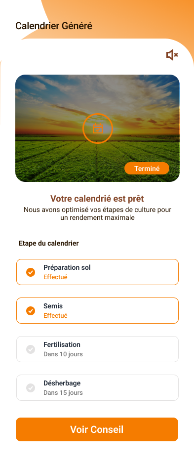
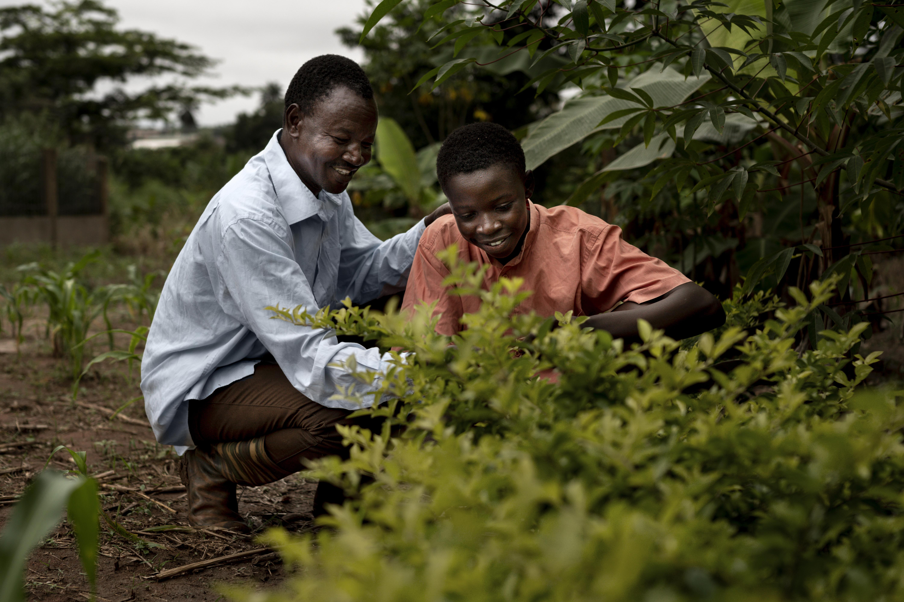

Climera accompagne les agriculteurs béninois vers une agriculture moderne, durable et respectueuse de l'environnement.

Climera est une solution digitale innovante qui met la technologie au service de l'agriculture traditionnelle. Nous connectons les savoirs locaux aux données modernes pour une agriculture plus productive et durable.

Des outils puissants et simples d'utilisation pour améliorer votre rendement tout en protégeant la nature.
Recevez des alertes météo localisées et des prévisions à 7 jours pour mieux planifier vos activités agricoles.
Des recommandations personnalisées d'experts agronomes adaptées à vos cultures, sols et région.
Analysez la qualité de vos sols, suivez leur évolution et recevez des conseils de fertilisation optimisés.
Adoptez des pratiques durables pour préserver la biodiversité et réduire l'impact environnemental.
Des milliers de familles améliorent leur récolte grâce à Climera.
Grâce aux prévisions météo, j'ai pu sauver ma récolte de tomates. Climera a changé ma façon de travailler.
Les conseils agricoles sont très pratiques. Mon rendement a augmenté de 30 % en une seule saison !
Le suivi des sols m'a permis de mieux fertiliser mes champs. Excellent outil pour les agriculteurs modernes.
Rejoignez plus de 12 000 agriculteurs qui utilisent Climera au quotidien.
Une question ? Un partenariat ? Nous sommes là pour vous.